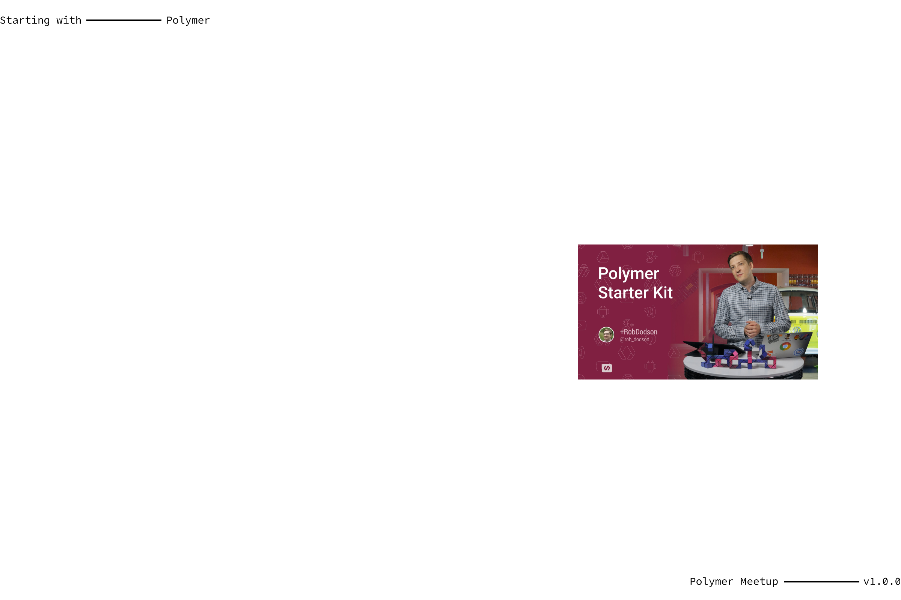
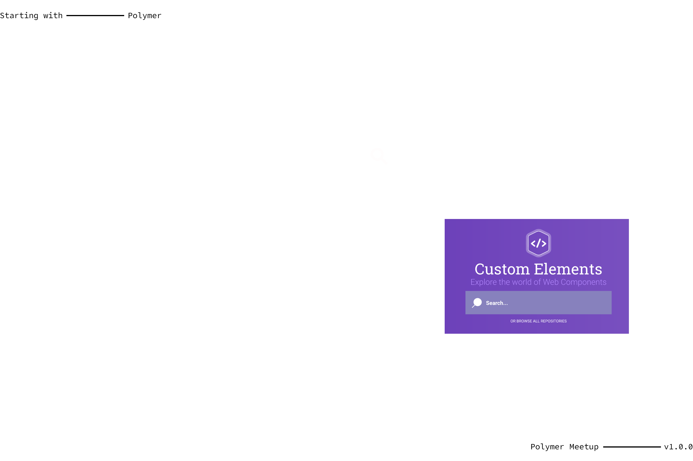

Node.js
NPM
Bower
Gulp
Polylint
Polyserve
WCT

Polymer starter kit


Polymer dom api

Polymer styling local dom

Polycasts

Elements catalog

Custom elements

@jthawme
mailto:jonathan@toaster.co